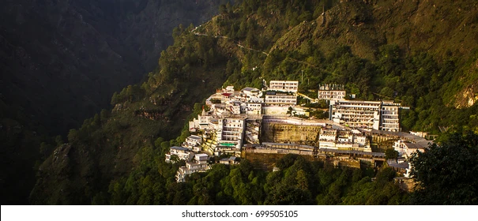
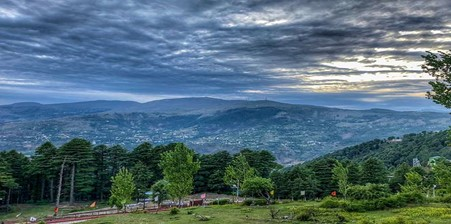
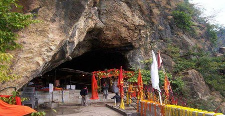
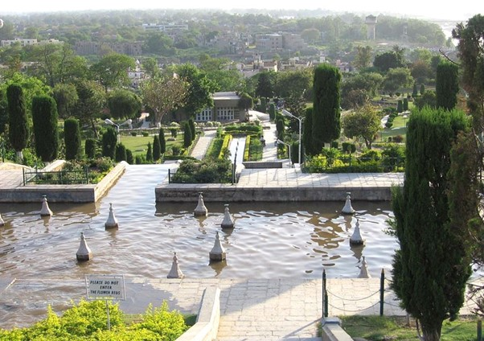

KATRA
Katra is a bustling town located in the Reasi district of the Indian union territory of Jammu and Kashmir. It serves as the base camp for pilgrims visiting the sacred Vaishno Devi Temple, one of the most revered Hindu shrines dedicated to Goddess Vaishno Devi. Situated at an altitude of approximately 875 meters (2,871 feet) above sea level, Katra is nestled amidst the picturesque Trikuta Mountains, offering breathtaking views of the surrounding valleys and hills.

Places near by:
1.Patnitop Tourism :
Patnitop, nestled in the Udhampur district of Jammu & Kashmir, is a charming hill station that captivates visitors with its serene landscapes and captivating beauty. Situated at an elevation of approximately 2,024 meters, Patnitop offers a tranquil escape from the hustle and bustle of city life. Known for its lush green meadows, dense forests, and panoramic views of the surrounding mountains, Patnitop is a popular destination for nature lovers, families, and those seeking a peaceful retreat
2.Shivkhori :
Shivkhori, a divine shrine of an avatar of Lord Shiva, is located in the lap of nature in the form of a cave on a hillock in Udhampur district in India's own Heaven on Earth, Jammu and Kashmir. The 4-foot lingam was formed naturally in a cave. This self-manifested lingam of Lord Shiva is also known as Swayambhu and is of great importance in Hindu religion. According to some, the cave is dedicated to one of the forms of Lord Shiva, which is believed to be unborn and invisible. As one explores the cave, they experience the divine aura of this form of Lord Shiva. Shivkhori is an enchanting destination famous for its religious belief. The route inside the cave is challenging for many, and the thrill is worth experiencing as devotees are sure to feel blessed at the sight of the idol.
3.Guptar Ghat :
Bagh-e-Bahu is a famous terraced garden built around the Bahu Fort in the city of Jammu. This picturesque garden is characterized by sparkling waterfalls, sprawling lawns, artificial lake, attractive flower beds, appealing fountains and trees. It is situated 5 km away from Jammu city center on the left bank of Tawi River. Bahu fort is the oldest fort in Jammu city, was originally built by Raja Bahu Lochan over 3000 years ago. Inside, there is a temple dedicated to the Hindu goddess Kali. It is a favorite picnic spots for the locals and tourists alike. Mini buses and auto-rickshaws are the common modes of the transportation to reach the Bahu Fort and Bagh-e-Bahu Garden.